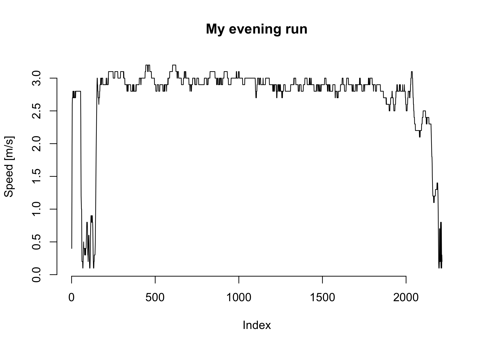
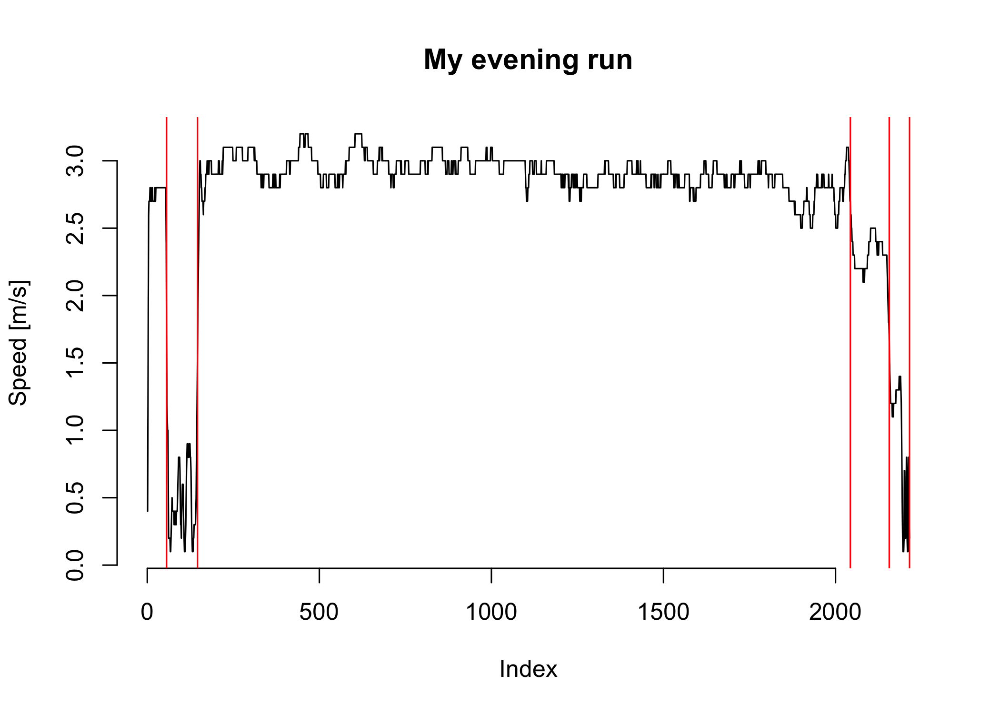

Könnte interessant sein..
In diesem Beitrag zeige ich ganz kurz und knapp wie Segmente innerhalb einer Verlaufskurve detektiert werden können. Verlaufskurven kommen im Sport ja recht häufig vor. Am Beispiel meiner Laufdaten, die von einer Smart Watch aufgezeichnet wurden, zeige ich eine mögliche Vorgehensweise mit R.
Eine schöne Übersicht über die verschiedenen Vorgehensweisen bietet Saskia Otto auf ihrer Homepage. Etwas ausführlicher beschäftigen sich Burg & Williams (2020) mit den verschiedenen Ansätzen.
Der Datensatz ist vorab schon bearbeitet und bereinigt.
# load package
library(changepoint)
# inspect data
str(myrun)
'data.frame': 2215 obs. of 10 variables:
$ activity_id: chr "bae93b27-755d-440d-b964-4f83bd42faff" "bae93b27-755d-440d-b964-4f83bd42faff" "bae93b27-755d-440d-b964-4f83bd42faff" "bae93b27-755d-440d-b964-4f83bd42faff" ...
$ altitude : num 37.8 37.8 37.8 37.8 37.8 37.8 37.8 37.8 37.8 37.8 ...
$ cadence : logi NA NA NA NA NA NA ...
$ distance : num 4.1 11.1 23.6 37 50.6 ...
$ heartrate : int 69 75 82 91 96 110 126 130 131 134 ...
$ speed : num 0.4 1.1 2 2.6 2.7 2.7 2.7 2.8 2.8 2.7 ...
$ time : int 15 20 25 30 35 40 45 50 55 60 ...
$ idS : int 35 35 35 35 35 35 35 35 35 35 ...
$ index : int 1 2 3 4 5 6 7 8 9 10 ...
$ pace : num 41.7 15.2 8.3 6.4 6.2 6.2 6.2 6 6 6.2 ...
Mich interessiert vor allem die Laufgeschwindigkeit, die als Variable Speed vorliegt.
# plot it
plot(myrun$speed, type = "l",
xlab = "Index",
ylab = "Speed [m/s]",
main = "My evening run")

Auf den ersten Blick eigentlich recht konstant. Normalerweise laufe ich zur Erwärmung ein paar Minuten langsamer, um dann am Parkeingang eine kleine Pause für Dehnungsübungen zu machen.
# detect change points
cpt <- cpt.mean(myrun$speed,
method = "PELT",
penalty = "BIC",
class = FALSE)
cpt
[1] 56 146 2043 2156 2215
Die Ausgabe zeigt die Punkte auf der X-Achse, die nun auch visualisiert werden können.
# plot it again and mark the points
plot(myrun$speed, type = "l",
xlab = "Index",
ylab = "Speed [m/s]",
main = "My evening run")
abline(v = cpt, col = "red")

Was für einen Lauf geht, geht natürlich auch für ein Set von Läufen. So können Segmente gefiltert werden und beispielsweise die Erwärmung oder andere definierte Abschnitte genauer analysiert werden.